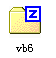
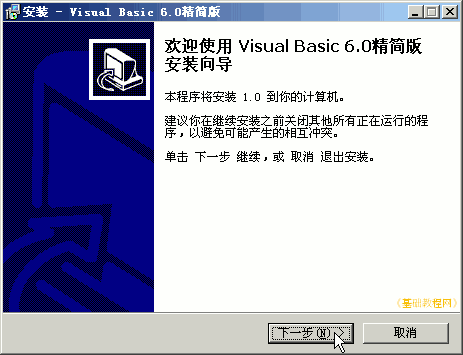
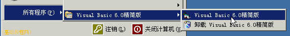
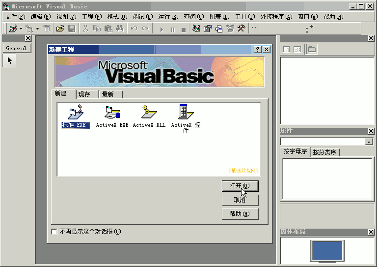
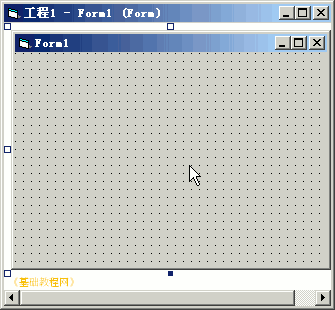
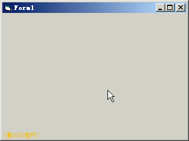
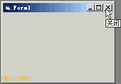
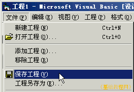
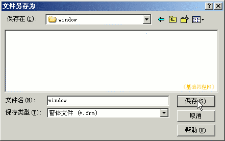
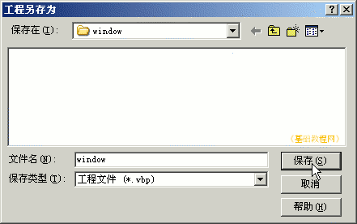

，或者点“开始-所有程序-Visual Basic 6.0-Visual Basic 6.0”；
，或者点“开始-所有程序-Visual Basic 6.0-Visual Basic 6.0”；VB程序设计基础
作者：TeliuTe 来源：基础教程网
VB是微软开发的一个程序设计组件，可以单独安装，下面我们来看一个练习；
1、下载和安装
1）获得VB安装程序，一般是光盘或压缩包，精简版的体积较小，注意：VB是商业软件；

2）运行安装程序，按提示一步一步安装即可，如果需要序列号，可以试试都输入1；

2、运行VB
1）双击桌面上的图标，或者点“开始-所有程序-Visual Basic 6.0-Visual Basic 6.0”；

2）VB启动后打开一个窗口，首先中间出来一个“新建”对话框，点“打开”继续；

3）默认新建一个标准 EXE 工程，在窗口中央显示一个灰色的窗体；

4）点工具栏中间的运行按钮，出来一个灰色的简单窗口，运行工具栏出现暂停和停止按钮；

5）点灰色窗口右上角的“关闭”按钮，返回窗体，也可以点运行工具栏里的停止按钮；

3、保存文件
1）点菜单“文件-保存工程”命令，以“window”为文件名，保存窗体到自己的文件夹中；
 
2）接着会又出来一个保存对话框，这次是保存工程，还是以“window”为文件名，保存工程到自己的文件夹；

3）再点菜单“文件-退出”命令，退出VB程序窗口；
本节学习了安装和运行VB的基本操作，如果你成功地完成了练习，请继续学习下一课内容；
本教程由86团学校TeliuTe制作|著作权所有
基础教程网：http://teliute.org/
美丽的校园……
转载和引用本站内容，请保留作者和本站链接。